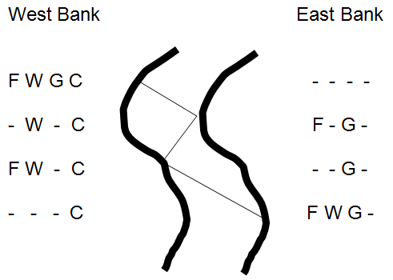
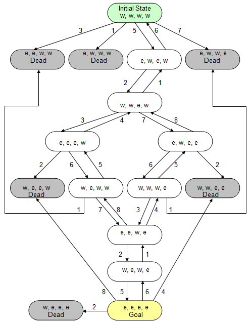
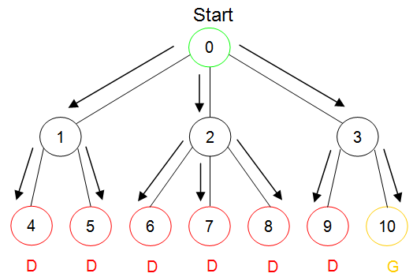
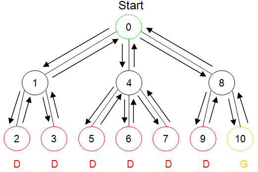

One of the earliest ideas in the quest for machine intelligence – and one that is still used today – is the modeling of decision making as state space search. A state space is a collection of three things:
Suppose we wanted to model a board game, such as chess or checkers, using a state space. First, we would need a way to represent the configuration of the game at any point in time. For a board game, this could consist of a simple two-dimensional grid, or array, containing symbols to represent the position of each player’s pieces. Next, we would need a description of the rules that apply to moving pieces in the game. For board games, such as chess, these are simply the rules that describe the basic movements of each piece (e.g., the rook may be moved any number of unoccupied squares forward or backward or left or right.). While these rules differ from game to game, they are generally quite simple and can be easily mastered. Finally, a test to recognize a winning situation would be necessary. In chess this would amount to a description of checkmate applied to your opponent. Checkmate, applied to your side, also functions as the loss test so that you can know when to quit playing.
Once the game, or problem, has been described in terms of a state space, making a move can be modeled as searching through the space of all possible moves. While algorithms, such as mini-max, exist for doing this in two player games, like checkers and chess, we will concentrate on single player games to illustrate the main concepts.
The Farmer, Wolf, Goat, and Cabbage puzzle is a simple one player “game” in which the player attempts to determine how a farmer can transport a wolf, a goat, and a cabbage across a river using a small boat that can only hold the farmer and one other object. What makes the puzzle somewhat challenging is that if the farmer leaves either the wolf alone with the goat or the goat alone with the cabbage, one will be eaten by the other. If the farmer is present, then he will keep the participants from eating one another. illustrates the first few moves a human player might try.
Initially all of the participants are on the west bank of the river. The goal is to have all participants on the east bank. The illustration shows the effect of three river crossings.
First, the farmer takes the goat (and himself) across the river leaving the wolf alone with the cabbage. Since wolves are carnivores, the cabbage will not be eaten.[9] Arriving at the east bank, the farmer leaves the goat and begins his second crossing, this time back to the west bank. When the farmer arrives at the west bank he places the wolf into the boat and begins his third crossing. Upon arrival at the east bank, the farmer, wolf, and goat are where we want them to be, but the cabbage is still on the west bank.
What should the farmer do next? Clearly, he can’t leave the wolf alone with the goat or he will be sorely disappointed when he returns with the cabbage. Perhaps it was a mistake to bring the wolf over to the east bank, but if he had brought the cabbage instead he would still be faced with a similar problem – if he left the goat and cabbage alone together, the goat would eat the cabbage.
The Farmer, Wolf, Goat and Cabbage Problem
In order to see how this problem can be solved, let’s map it to a state space. First, we need a way to represent the state of the system at any point in time. Clearly, the important information is the location of each of the four participants, and there are only three locations mentioned in the puzzle: the west bank, the east bank, and the boat.
None of the four participants are in the boat at the start of the problem. None are required to be in the boat at the conclusion of the problem. In fact, the boat is used simply as a conveyance for moving the farmer, and at most one other object, back and forth between the banks of the river. Hence, it isn’t really necessary to model the boat as a place in order to solve this problem.
This leaves only the east bank and the west bank of the river as potential locations for the participants. The state of the problem can therefore be modeled by an ordered list of four values. The first value gives the location of the farmer, either w for west bank or e for east bank. The second value is the location of the wolf. The third value is the location of the goat, and the fourth value is the location of the cabbage. Hence, the state of the problem at any point in time will look like:
( <side for farmer>, <side for wolf>, <side for goat>, <side for cabbage> )
The problem begins with all of the participants on the west bank of the river:
(w, w, w, w).
The goal is to get all of the objects onto the east bank of the river. In other words, to reach state:
(e, e, e, e).
A loss occurs whenever the goat eats the cabbage or the wolf eats the goat. This can occur in six possible ways:
and the wolf can eat the goat
These states, which result in a loss, are often called “dead states”
Now that we know how to represent the problem and to recognize the goal state and dead states, all that is required to complete the state space representation of the problem is to determine the valid transitions that exist between states.
There are a total of eight possible transitions that can take place in the game. Two of these transitions involve the farmer traveling across the river alone (either from west to east or east to west). These two transitions may be represented by the following “rules.”
The first rule represents the farmer moving from the west bank to the east bank. The second rule represents his movement from the east bank to the west bank.
The left hand side of each rule (the part that precedes the arrow) specifies a pattern to be matched. In the case of Rule 1, the pattern indicates that the farmer must be on the west bank of the river for the rule to be applicable. The locations of the other three objects (wolf, goat, and cabbage) are not specified by Rule 1. The right hand side of the rule (the part that follows the arrow) specifies a replacement pattern. For Rule 1, the location of the farmer is set to east and the locations of the other three objects are left unchanged. Applying Rule 1 to a state in which the farmer’s location is “w” generates a new state, identical to the first, with the exception that the farmer’s location is set to “e” – thus modeling the movement of the farmer from the west bank to the east bank of the river.
The other six rules are:
This completes the state space description of the Farmer, Wolf, Goat, and Cabbage problem. The entire description is summarized in .
As was mentioned at the beginning of this section, the reason for constructing a state space is so that it may be searched in order to find the goal state. More specifically, we are interested in finding a solution path – a sequence of transitions (moves or decisions) that lead from the initial state to the goal state. If more than one solution path exists, we are usually interested in the shortest or cheapest one.
State description:
( <side for farmer>, <side for wolf>, <side for goat>, <side for cabbage> )
Initial state:
( w, w, w, w ) – All participants begin on the west bank of the river.
Final (goal) state:
( e, e, e, e ) – All participants end on the east bank of the river.
Loss (dead) states:
Transitions:
State space description of the Farmer, Wolf, Goat, and Cabbage problem
Complete search space of the Farmer, Wolf, Goat, and Cabbage problem
presents all of the sixteen possible states that can exist in the Farmer, Wolf, Goat and Cabbage problem, along with the valid transitions between those states. States that represent a loss are marked with the label “Dead”. The initial state and goal state are also marked.
An examination of shows that from the initial state where all participants are on the west bank of the river, exactly four things can happen. One possibility is that Rule 1 will be applied, indicating that the farmer travels to the east bank alone. If so, then the game is lost as the goat eats the cabbage and the wolf eats the goat. The second possibility is that Rule 3 will be applied, modeling the situation where the farmer and wolf travel across to the east bank together. This action also results in a loss, since the goat will immediately eat the cabbage. A third possibility is modeled by Rule 5; the farmer crosses the river with the goat, leaving the wolf and cabbage together on the west bank. This is an acceptable situation in which no one is eaten. The final possible action that can be taken from the initial state is modeled by Rule 7. Application of this rule indicates that the farmer and cabbage to travel across to the east bank, but since that leaves the wolf alone with the goat, a loss results.
From state (e,w,e,w) there are only two possible actions that can occur. Either the farmer takes the goat back to the east bank, as modeled by Rule 6; or the farmer returns to the west bank alone (Rule 2). Note that the application of Rule 6 at this point returns the problem to the initial state – the farmer took the goat across to the east bank then turned around and brought it back to the west bank. Algorithms that explore search spaces must be able to detect these kinds of loops to prevent them from “exploring” paths like Rule 5, Rule 6, Rule 5, Rule 6, Rule 5, Rule 6…, in which the farmer endlessly hauls the goat back and forth across the river in a never ending cycle.
From state (w,w,e,w) three actions can occur. Rule 1, in which the farmer travels across to the east bank alone, could be applied at this point but that would simply return the problem to the previous state (e,w,e,w). Rule 3 can be applied, indicating that the farmer and wolf travel across the river to the east bank where they join the goat, or Rule 7 can be applied, where the farmer and cabbage join the goat on the east bank. Either of the two resulting states, (e,e,e,w) or (e,w,e,e), are acceptable in the sense that nothing gets eaten.
One can continue to explore the space in this manner, tracing out the states that are reachable from (e,e,e,w) and (e,w,e,e) until the goal state is eventually encountered. Note that once the goal state is reached, the search algorithm must recognize this fact, so that the farmer can finally rest.
As we have just seen, a diagram of the entire state space of a problem makes it relatively easy to see how that problem could be solved. The diagram of was generated by applying every applicable rule to the initial state of the Farmer, Wolf, Goat, Cabbage problem and all subsequent states until no new states could be generated. How can this process of state generation and exploration be organized?
There are two common procedures for searching a state space. These are breadth-first search and depth-first search. Beginning at the initial state, breadth-first search considers all paths of length one, then all paths of length two, then three, etc, until it encounters the goal. The breadth-first strategy can be thought of as exploring all paths of equal length “in parallel”. Depth-first search, on the other hand, will explore a single path, corresponding to a single line of reasoning, or chain of events, until either the goal is reached or failure is certain. Only when it can determine that a path leads to failure does the algorithm back up and try an alternate route.
illustrates how breadth-first and depth-first searches of a sample state space would be conducted. The state space graph begins at an initial state from which three valid transitions could be applied. The left and right transitions lead to states that each support two additional transitions. The middle transition from the initial state leads to a state that supports three more transitions. All paths of length two lead to dead states, with the exception of the rightmost path, which leads to the goal.
(a) Breadth-first search of a state space
(b) Depth-first search of a state space
Breadth-first verses depth-first search
Part (a) of illustrates a breadth-first search of the space. During breadth-first search, all three of the choices (transitions) that can be taken from the initial state are explored – generating three potential states. The transitions emanating from these three states are then explored in parallel.
Part (b) of illustrates a depth-first search of the same space. During depth-first search, a single path is explored until it reaches the goal or a dead end. If a dead end is encountered, the search backs up to the previous node in the space and applies another transition – equivalent to backing up and selecting a different choice. When all of the possible choices available from a node have been exhausted, depth-first search backs up to the next highest node. This pattern continues until either the goal is found or all choices available from all nodes reachable from the initial state have been exhausted.
The first path explored by depth-first search in is the left-most path, after two moves that path hits a dead state, so the search backs up to the node labeled “1” and tries the transition that leads to node “3”. Since node “3” is a dead end, the search backs up to node “1”, but since both transitions emanating from that node have already been explored, the search backs up to the initial state, node “0”. The second transition available at node “0” is then applied and the search continues.
Breadth-first search and depth-first search each have advantages and disadvantages. Breadth-first tends to use more memory than depth-first, since it has to keep up with all of the states on each of the paths that it is exploring. Depth-first tends to use less memory than breadth-first, since it only has to keep up with the states on the current path. A disadvantage of depth-first search is that some way of detecting loops in the search space must be implemented. Otherwise, depth-first can get caught in an endless loop exploring a path that leads nowhere. This problem is normally solved by having the algorithm check the current state on the active path against each of the past states on that path to see whether the current state has already been visited. If so, this current state is treated the same as a dead end, and the algorithm backs up to try another path.
Despite their differences, both the breadth-first and depth-first algorithms are known as blind searches, because they will continue to search blindly though the state space until the goal is reached or the entire space has been explored. While this is acceptable for small state spaces such as the Farmer, Wolf, Goat, and Cabbage problem, most interesting problems have tremendously large spaces that cannot be fully explored for practical reasons.
Consider, for example, a problem in which only two operations can be applied to each state. Further assume that each transition leads to a unique state (i.e., there are no loops in the states space). Under these assumptions, starting from the initial state, after one move there will be two possible states; after two moves four more states; after three moves eight more. In general, the nth move will add 2n states. Thus, the 10th move will add 210 or 1,024 states to the graph. After only 20 moves there will be millions of states in the graph – despite the restriction that only 2 operations can be applied at each stage.
In order to be able to explore deep into a state space without having to deal with an exponentially increasing number of states, heuristic searches are often used. A heuristic is a “rule of thumb” – often a simple measurement that is used as an indicator of some other aspect of the problem that would be difficult or impossible to accurately measure. For example, people often use price as an indicator of quality. Although everyone knows that price and quality are very different things, we sometimes say things like “your new car must have cost you a fortune” when we mean that your new car is very nice. One reason we do things like this is because price is something that is easy to measure, while quality is much more difficult to accurately capture.
A heuristic search is a search that incorporates a heuristic to guide the direction pursued by the search. A simple heuristic for the game of checkers might be:
H = NumberOfOpponentPiecesCaptured – NumberOfYourPiecesLost
This heuristic reflects the fact that in checkers the more pieces you have captured from your opponent and the fewer you have lost to him or her, generally the better off you are. A heuristic search employing H would first pursue paths that tend to increase H, because these paths are more likely to lead to a win.
A simple heuristic search that can be used in single player games (such as finding your way through a maze) is called “hill climbing”. Hill Climbing searches work by:
generating all states that are one transition away from the current state,
applying a heuristic function to each of these states,
moving to the state with the highest heuristic value, and then
repeating this process until the goal is reached.
While hill climbing has some drawbacks, such as the fact that it can get stuck on what are called “local maximums” where every possible next move appears worse than the current state, given a good heuristic function hill climbing can frequently solve problems much more effectively than a blind search.
There are other, more complex, heuristic search algorithms, such as A* (pronounced “A star”) and mini-max, which overcome many of the shortcomings of hill climbing. Like hill climbing, A* is tailored for single player games. Mini-max is appropriate for two-player games. While additional details about these search procedures are beyond the scope of this book, the main thing to remember about heuristic searches is that they generally outperform blind searches because they incorporate knowledge about the problem being solved (or game being played) in order to concentrate effort in directions that are likely to lead to success – rather than searching blindly about for a solution.
Exercises for
What are the three major components of every state space problem description?
Using and , list a sequence of rules that can be followed to solve the Farmer, Wolf, Goat, and Cabbage problem.
Translate the sequence of rules developed in Problem 2 into an English-language description of how the Farmer, Wolf, Goat, and Cabbage problem can be solved.
Describe in English a second simple path (one with no loops) for solving the Farmer, Wolf, Goat, and Cabbage problem.
Footnotes
[9] Since cabbages are plants, the wolf will be safe as well.